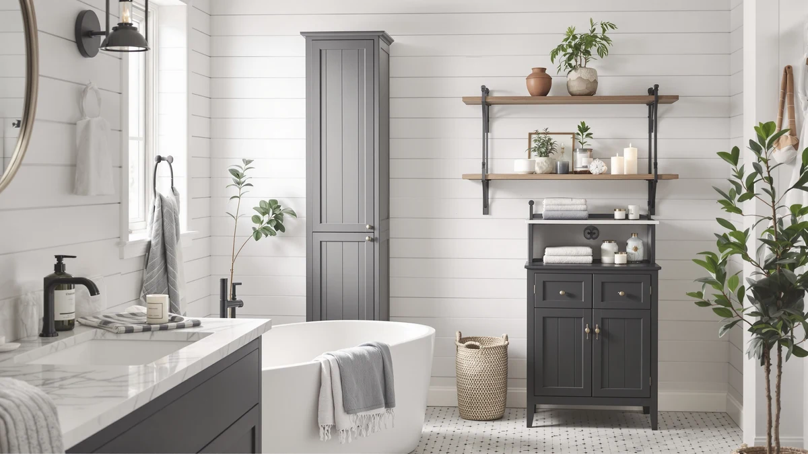

Things to Know Before You Buy
- Go vertical first. Wall space above the toilet and beside the mirror holds more than any floor cabinet in a small bathroom.
- Measure before you shop. Note the depth of your vanity gap and the swing of the door, because two extra inches ruins a cabinet's fit.
- Small bathroom organization tips work best in layers. Combine a wall rack, a set of stackable bins, and an under-sink tray instead of one big piece.
- Clear containers save time. You spot what's inside without opening a drawer, which matters when counter space is already tight.
- Budget runs low here. A useful starter set costs under $10, and a full wall system rarely tops $35.
The best small bathroom organization tips start with your walls, not your floor, because a cramped five-by-eight room rarely leaves square footage to spare. Once you look up and out instead of down, a cluttered vanity turns into a workable routine in an afternoon.
Most small bathrooms fail the same way. A single cabinet holds towels, cleaning spray, and half-used bottles of shampoo, and nothing has a fixed spot. You end up digging through the same pile every morning, and the overflow lands on the counter. The fix is not a bigger bathroom. It is a system that sorts items by size and how often you reach for them.
This guide breaks down where small-space storage actually works, how to pick pieces that fit a tight footprint, and the mistakes that waste money on gear you will return within a month. By the end, you will know exactly what to buy first and where it goes.
What You Need to Know
Before you buy anything, take stock of what actually needs a home. Bathrooms accumulate three kinds of clutter: daily-use items like toothbrushes and razors, backstock like extra toilet paper and spare bottles, and occasional gear like cleaning supplies and first-aid kits. Each category wants a different spot. Daily items belong within arm's reach of the sink or shower, backstock can live higher up or behind a door, and occasional gear works fine in the least convenient corner.
Next, measure the room itself. Note the width of any open wall, the clearance the door needs to swing fully open, the gap under your sink around the P-trap, and the height from the floor to the bottom of your medicine cabinet. These four numbers rule out most products before you even browse listings, and they save you a return shipping label later.
Small bathroom organization tips only work if you respect the room's real limits. A five-by-eight bathroom has almost no floor space to give up, so anything freestanding competes directly with the space you need to open a door or step out of the shower. Wall-mounted and over-the-toilet options avoid that fight entirely, which is why they show up first in almost every small-space plan.
Types and Categories
Small-bathroom storage splits into four practical categories. Wall-mounted racks and shelves use vertical space above the toilet tank or beside the mirror, adding storage without touching the floor. A rack like the Roeveca rolled-towel holder claims a strip of wall that would otherwise sit empty and turns it into a spot for fresh towels.
Under-sink organizers solve a different problem: the awkward gap around your drain pipe. Two-tier trays and pull-out bins slide around the P-trap instead of forcing everything into one deep, disorganized cabinet. This is usually where cleaning supplies, extra toilet paper, and hair tools end up.
Stackable bins and drawer sets, like the Vtopmart clear containers, handle the smallest items: makeup, medicine, hair accessories, and the loose things that pile up on a counter. Clear plastic lets you see contents at a glance, so you are not opening four bins to find one bottle of sunscreen.
Floor cabinets still have a place if your room has a genuine dead corner. A narrow tower beside the toilet or in an unused corner adds enclosed storage without blocking traffic. Match the category to the specific gap in your bathroom rather than buying the biggest piece that fits through the door, and the room stops feeling cramped.
How to Choose
Choosing the right pieces for small bathroom organization comes down to four questions, tackled in the order that saves you the most wasted money. Start with footprint: does this item sit on the floor, mount on a wall, or hang over an existing fixture? In a tight room, wall-mounted and over-the-toilet options beat freestanding furniture almost every time, because floor space in a small bathroom is worth more than storage capacity.
Second, decide between open and closed storage. Open shelves and racks give you fast access to towels and daily items, and they read as airier in a small room. Closed bins and cabinets hide clutter and protect contents from shower steam, which matters for anything you do not want swelling or rusting. Most workable systems mix both: closed containers for backstock, open racks for what you use every day.
Third, check the material against your bathroom's humidity. Steel with a powder coating and solid plastic resist moisture for years. Untreated wood and cheap MDF absorb water at the seams and warp, so keep those out of the wet zone near the shower or sink.
Fourth, confirm the mounting method matches your walls and your lease. Renters should lean toward adhesive racks, tension poles, and freestanding pieces that need no drilling. Homeowners can anchor into studs or tile for a permanent fit. Skip anything that requires screwing directly into tile unless you own the space and are comfortable patching a hole later. Answer these four questions honestly, and a wall of options narrows down to two or three products that actually fit your bathroom.
Common Mistakes to Avoid
The most common mistake in small bathroom organization is buying by capacity instead of footprint. A 16-inch-wide organizer looks reasonable in a photo, but in a bathroom with 14 inches of clear wall, it never fits. Measure your actual gap before you add anything to your cart, not after it arrives.
A second mistake is skipping the wall anchor on tall or top-heavy pieces. A loaded shelf or narrow tower can tip if it only rests against the wall, and that gets dangerous fast in a house with kids or pets. Use the included hardware every time, even when a piece feels stable when empty.
People also stack too many small bins without a system. Six identical clear containers with no labels turn into the same guessing game as an unsorted drawer. Group items by category first, then pick containers sized to match, so you open the right bin on the first try.
Buyers also ignore the door swing. A cabinet or hamper placed a few inches too far into the room blocks the door from opening fully, and you discover the problem only after it is installed. Check clearance with the door open and closed before you commit to a spot.
Care and Maintenance
Small-bathroom storage takes more punishment than furniture anywhere else in the house, because steam, splashed water, and daily handling hit it constantly. Wipe down shelves and bins weekly with a damp cloth and mild cleaner. Hairspray residue and soap film build into a sticky layer fast in a room this size, and that grime is what makes cheap organizers look worn within months.
Run the bathroom fan or crack the door after every shower so humidity has somewhere to go besides your storage. Wood and MDF pieces near the shower or sink are the most vulnerable. Check the seams and edges every few weeks for swelling, and dry any standing water immediately if you spot it under the sink.
Tighten hardware on wall-mounted racks and hinged cabinet doors every couple of months. Repeated opening and closing loosens screws faster than you would expect, and a wobbly rack eventually pulls loose from the wall. For metal pieces, touch up any chipped coating right away, since a small scratch turns into rust in a humid room within weeks.
Empty and wash clear bins a few times a year. Spilled lotion, loose powder, and old medicine residue build up at the bottom, and a quick rinse keeps the whole system easy to use instead of turning back into the pile you started with.
Our Top Picks
These three picks solve the storage gaps that come up most in small bathrooms: sorting the tiny stuff, freeing up wall space for towels, and organizing what's left over on a tight budget.

Editor’s Pick
Vtopmart 4 Pack Small Clear
These four clear bins corral makeup, medicine, and hair accessories that otherwise spread across your counter. The clear plastic lets you spot what's inside without opening every container, and the compact size fits inside a cabinet or under the sink.
$21.99
Check Price on Amazon
Best Value
Towel Rack for Rolled Towels
This wall-mounted rack turns a strip of empty wall into a spot for rolled towels, freeing up the shelf or closet space they used to take. It mounts without eating any floor space, which matters most in a small bathroom.
$30.99
Check Price on Amazon
Premium Choice
Bathroom Organizers and Storage 4
At under $7, this four-piece set covers the small stuff: cotton swabs, hair ties, and razors, and it barely dents your budget. It's a low-cost way to test whether a bin system fits how you actually use the room before spending more.
$6.99
Check Price on AmazonFrequently Asked Questions
What's the best way to organize a small bathroom?
How do I store toiletries without a medicine cabinet?
Is it safe to mount storage on bathroom tile?
How much does it cost to organize a small bathroom?
Do stackable bins work in humid bathrooms?
Verdict
Good small bathroom organization tips all point to the same starting move: work the walls and the small gaps before you consider a floor cabinet. Measure your room, sort your clutter into daily, backstock, and occasional categories, and match each one to a wall rack, an under-sink tray, or a set of stackable bins. That order alone solves most of the clutter in a five-by-eight bathroom without a renovation.
If you're starting from scratch, the Vtopmart clear bins are the easiest first purchase. They cost under $25, take five minutes to set up, and immediately clear the counter of the small items that pile up fastest. Add the Roeveca towel rack once you know how much wall space you have left, and round out the system with a cheap organizer set for anything still loose. Respect the material and the anchor points, and the setup holds up for years instead of a single humid summer.